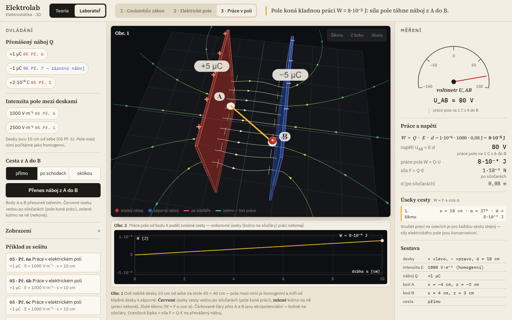
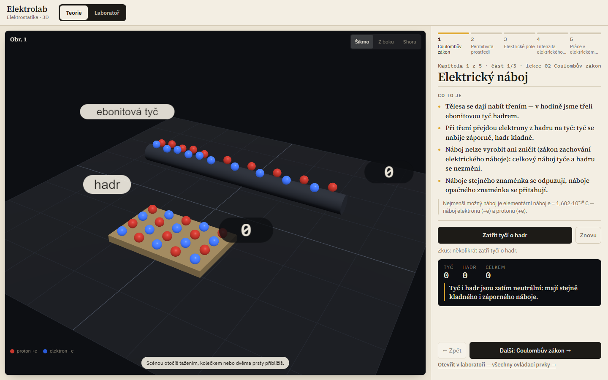
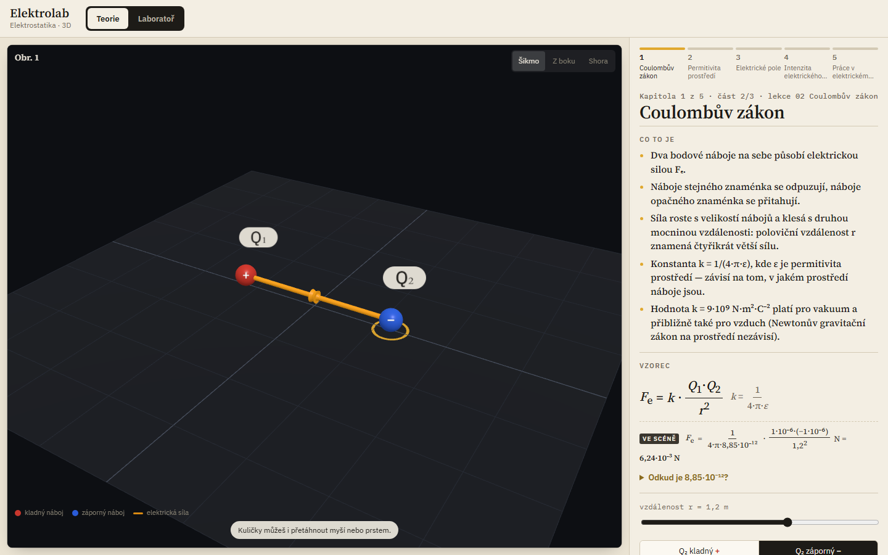
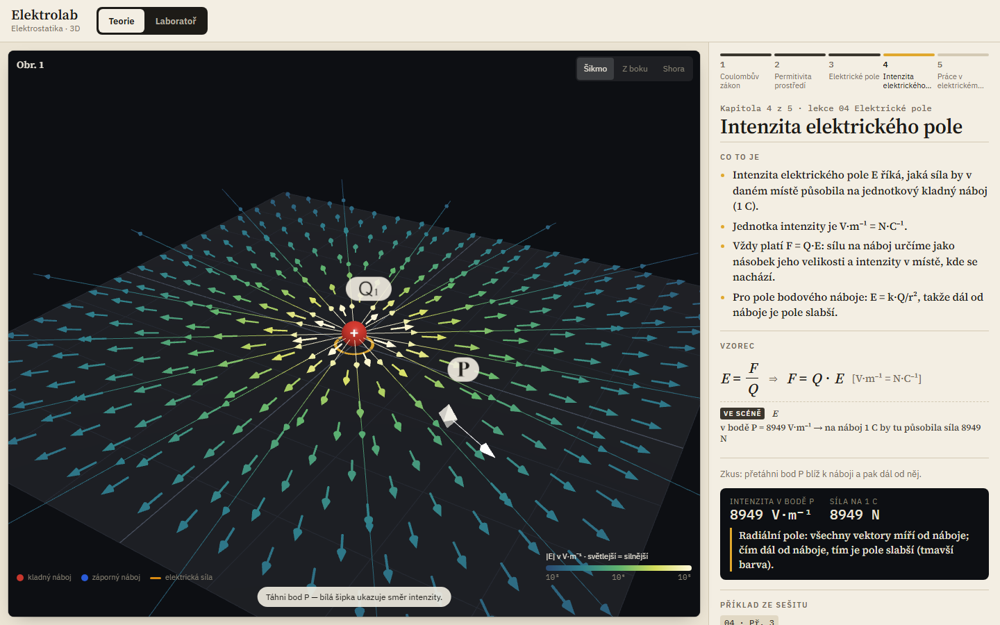
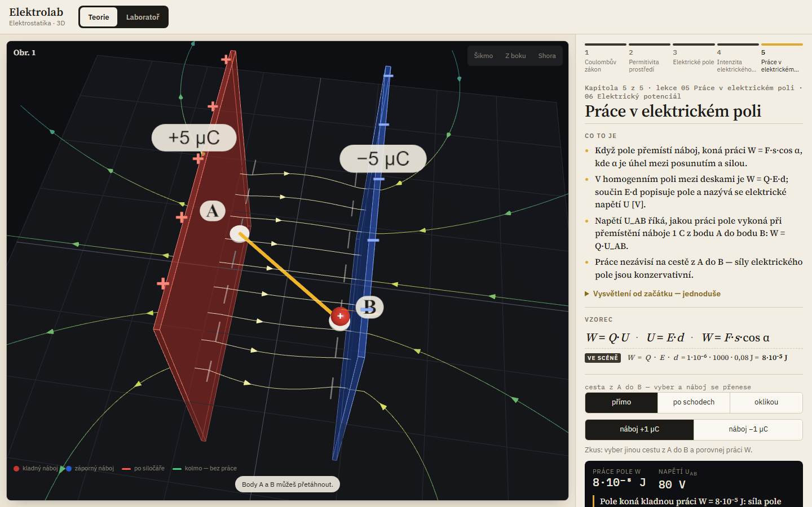
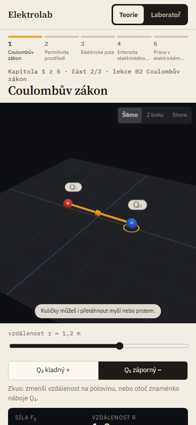

Theory
Five chapters in lesson order: charge and Coulomb's law, permittivity, electric field, field strength, work in a field. Each one has a short "what it is", the formula, and at most two controls.
Case study · school project · Czechia, 2026
Elektrolab is a 3D study app I built for my physics class at gymnázium. Charges, field lines, field strength and work in a field. Everything that's a formula in our notebook is a scene here that you can play with. And every number matches the notebook.
Open the app → Source on GitHub

This is the real app, running below. It's in Czech because it was made for my class. Drag the red and blue balls and watch the force arrows and the numbers change.
Small screen? Open it full screen.
In our notebook, electrostatics is formulas and a few flat pictures. Field lines, field strength, or the fact that work in a field doesn't depend on the path are hard to imagine on paper.
My first version showed all of it, but it put fifteen controls and two panels of numbers on the screen at once. Nobody knew where to look.
Five chapters in lesson order: charge and Coulomb's law, permittivity, electric field, field strength, work in a field. Each one has a short "what it is", the formula, and at most two controls.
The task from class, with the solution hidden until you click. One button builds the example in the 3D scene, and the formula above it recalculates with the scene's numbers.
Every control at once: graphs of force and field strength, an analog gauge (force meter, field meter, voltmeter), and a table of the setup.




The one rule of the project: everything must match what we were taught. The symbols from the board, Coulomb's law in the exact form the teacher wrote, Czech number formatting, the units we use.
Every notebook example is also an automated test. After rounding, the app has to show exactly the answer from the notebook: 3.6·10⁶ N for lesson 2, task 1; 4.9·10⁻³ N for the same charges in ethanol; 10⁻⁴ J for the work in lesson 5, task 6. If I break the physics, the tests fail before anyone in class sees it.
84 automated tests · 0 failing
src/core/, separate from the drawing code, and is tested in
Node with node --test.
The hardest part was making it clear. Some classmates got it right away. Others opened it and had no idea what was going on.
People studied from it. The class liked it. I think one classmate studied from Elektrolab and got a good mark for the first time. I'm not sure, though.
AI can build more than I expected. I didn't think it could get to 3D charges and field lines that move when you drag them. Watching Claude Opus build that showed me how much one person can make with AI now.
What I'd change: the visuals. A few classmates copied a 3D picture from the app into the exam but left out the colours. The colours mean something, so their drawings were wrong. Next time I'd put what the colours mean right in the scene, where nobody can miss it.